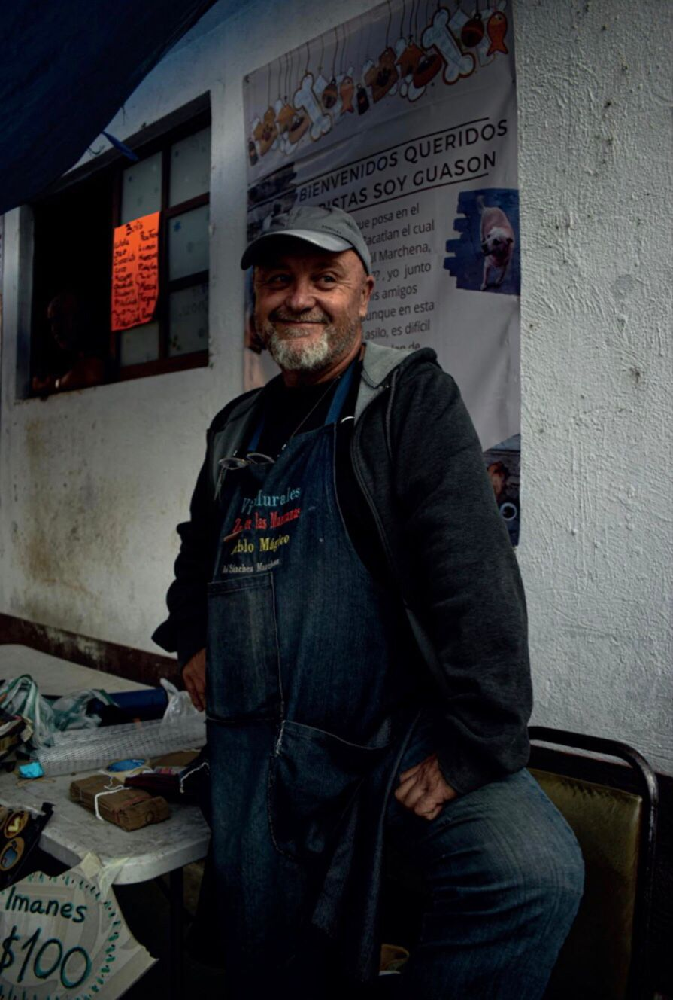

Portafolio Visual Monica Santuario
Hola mi nombre es Mónica, tengo 25 años y soy Licenciada en Diseño y Comunicación Visual, Soy una persona perseverante, responsable y honesta que busca obtener experiencia, destacando en el área de ilustración, fotografía y producción audio visual.
Le presento mi portafolio
Tantita Tinta
Ilustración para proyecto ficticio. Cartel adaptado a formato de difusión digital, tales como redes sociales
El protector
Ilustración para redes sociales. Sofía la niña a la que le encanta la lectura se muestra bajo el cuidado de su espiritu animal él cual le sirve como guia.
Perrito de chocolate
Ilustración realizada a partir de la inspiración de 3 emojis, unas flores, la luna y una barra de chocolate
Pollito y yo
Ilustración personaliazada, representa a una pareja enamorada como si fueran pollitos.
Perrito de chocolate
Proceso de creación de algunas de mis ilustraciones
@santmonie Hace un a√±o que tenia en borradores el resultado del filtro y apenas me decidi a hacer el dibujo jiji me gusto mucho ‚ò∫Ô∏èüíô#art #illustration #dog #procreate #drawingchallenge #drawing ♬ Shop (From "Undertale") - 3000m
Autorretrato Angel
Proceso de creación de algunas de mis ilustraciones
@santmonie Llegue tarde al trend pero igual lo subo jsjs vayan a mi igg si quieren ver bien el dibujito uwu es @cira.mon üíô‚ú® #drawing #draw #procreate #drawtrend ♬ kingdom dance x eleanor rigby x test drive - Ams üåº (she/they)
Fotografía Documental
Retrato realizado en Zacatlan, Puebla con el objetivo de mostrar a los artistas que trabajan en sus famosos murales de mosaico que decoran los alrededores de la ciudad.
Para Mi
Autoretrato conceptual que busca el auto conocimiento por medio de la representación fotográfica, inspirada en la canción "For Me" de Day6.
Fotografía Publicitaria
Proyecto ficticio en donde se realizó una secuencia de tres fotografías con narrativa visual para publicitar los teni-patin de la marca onix
Retrato Animal
Fotografía de un faisan dorado tomada para el concurso "Las Imagenes hablan lo que tus ojos ven" en Parque Ecológico Ehecatl, Edo Mex.